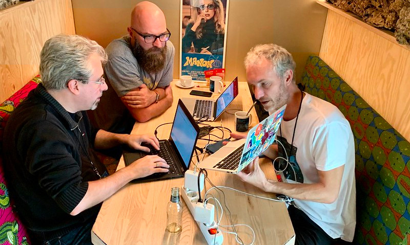

The PHPUnit development team is pleased to announce the immediate availability of PHPUnit 10. This release adds new features, modifies and removes existing functionality, and fixes bugs.
PHPUnit 10 was scheduled to be released on February 5, 2021. Due to various reasons, including a pandemic, this was simply not possible. This does not mean that nothing has been achieved since PHPUnit 9 was released in February 2020. Quite the opposite, especially "under the hood".
PHPUnit 10 is the most significant release in the history of the PHPUnit project (which began 23 years ago). This release is to PHPUnit what PHP 7 was to PHP: a massive cleanup, refactoring, and modernisation that lays the groundwork for future development.
A detailed list of changes can be found here. The most significant changes are discussed below.
No, you do not.
Just because PHPUnit 10 has been released today does not mean that PHPUnit 8 or PHPUnit 9 will no longer work. While old versions of PHPUnit will eventually stop receiving bug fixes, we will keep them compatible with new versions of PHP for as long as possible.
We sincerely hope that you do not use the Death Star Version Constraint and therefore do not automatically and unintentionally upgrade to a new major version of PHPUnit.
Upgrading a dependency to a new major release must be a conscious decision that is part of a defined process. This process should include, at a minimum, reading an announcement like this and the ChangeLog.
PHPUnit 10 requires PHP 8.1 or later. If you are not using PHP 8.1 or PHP 8.2, you will not be able to use PHPUnit 10 right away.
Need more reasons to upgrade your PHP?
Security support for PHP 7 ended in November 2022, and so did the active support for PHP 8.0. The only actively supported versions of PHP as of February 3, 2023 are PHP 8.1 and PHP 8.2.
Also note that PHPDBG and Xdebug 2 are no longer supported sources of code coverage information. You now need either PCOV or Xdebug 3 to collect, process, and report code coverage information.
We are confident that PHPUnit 10 works as intended, but in some respects it works differently than previous versions. For example, functionality marked as deprecated in PHPUnit 9 has been removed in PHPUnit 10. You should not even try to upgrade to PHPUnit 10 if you cannot run your test suite with PHPUnit 9.6 without getting deprecation warnings.
If you use a third-party test double library such as Prophecy, for instance, you will need to either rewrite your tests or wait for a version of the third-party test double library you use that is compatible with PHPUnit 10. The out-of-the-box support for Prophecy in PHPUnit was deprecated in PHPUnit 9 and has now been removed for PHPUnit 10.
If you use a third-party extension for PHPUnit's test runner then you will have to wait for a version of the
third-party extension that is compatible with PHPUnit 10. The vendors of such extensions need to migrate their
code from the old TestListener and Hook systems to the new event system.
If you use a tool such as Infection or ParaTest that wraps PHPUnit's test runner then you will have to wait for a version of that tool that is compatible with PHPUnit 10. The same holds true for alternative test runners such as Pest.
Please note that the documentation has not been updated for PHPUnit 10 yet. We are in the process of reviewing, updating, and in some cases rewriting the documentation for PHPUnit 10. We do this chapter by chapter and hope to complete this task soon.
If the above points do not put you off, then please: go ahead and upgrade! And if you do encounter a problem, please report it.
It has taken Sebastian Bergmann thousands of hours to develop, test, and support PHPUnit.
Perhaps now is the time to contribute to the development of PHPUnit or sponsor Sebastian's work.
Apart from functionality that was deprecated in PHPUnit 9 and that has now been removed in PHPUnit 10, most of the changes are "under the hood" and should not affect end users. However, they do affect developers of extensions and/or wrappers around PHPUnit's test runner, such as Infection, ParaTest or Pest.
These changes were necessary to make life easier for those working on PHPUnit and to allow for the development of new features in the future.
Previous versions of PHPUnit provided the TestListener interface as well as the
TestHook interfaces for developers of extensions for PHPUnit's test runner. Both of
these approaches for extending PHPUnit's test runner had severe drawbacks.
PHPUnit 10 replaces the TestListener and
TestHook interfaces with an event system: (almost) everything is an event now.
All output, both to the console and to log files, is now based on events.
The development of this event system has been led by Arne Blankerts and Andreas Möller. It was started at the EU-FOSSA Cyber Security Hackathon in October 2019, together with Stefan Priebsch and Ewout Pieter den Ouden.

Photo: Arne Blankerts, Andreas Möller, and Ewout Pieter den Ouden work on the new event system for PHPUnit
Following the best practice of "eating your own dog food", we refactored (and in some cases rewrote)
PHPUnit's internal code that used to use the TestListener interface and ResultPrinter
classes to use the event system instead. By forcing ourselves to use events for all output, to the console as
well as to logfiles, we discovered many confusing and/or missing events early on.
The new event system is not only superior to the previous TestListener and Hook approaches.
The work on the event system had a ripple effect throughout PHPUnit's entire codebase. A lot of technical debt was
finally paid off. Finding the right places to emit the right events revealed countless previously hidden
inconsistencies and problems.
For example, for the TestRunner\Configured event, we needed a canonical and immutable representation
of the configuration. As a result, the code that loads the XML configuration is now better. And the code that handles
the CLI arguments is better. And most importantly, the code that combines these two configuration sources into
"the configuration" is now better. Once we had "the configuration", we realised that we could now implement large parts
of the CLI test runner much more easily. This allowed us to clean up other parts, and so on and so forth.
The event system is "read only". Developers can write extensions for PHPUnit's test runner and subscribe to events.
The Event objects passed to subscribers as well as any value object aggregated in such an Event
object is immutable.
We regret that PHPUnit 10 and its new event system require significant changes to extensions for and/or wrappers around PHPUnit's test runner. We are confident that in the long run, the developers of such extensions or wrappers will appreciate the benefits of the new event system over its predecessors.
The feedback we have received so far is very promising: Already in October 2021, Nuno Maduro informed us that the migration of Pest from the old test listeners to the new event system was a "great" experience. The discussions we had with Filippo Tessarotto were crucial in ensuring that solutions like ParaTest can be updated to work with PHPUnit 10.
The documentation for the new event system is not yet as complete or as understandable as we would like it to be. In the meantime, this video of a presentation from 2021 gives a good overview of the concepts and ideas behind the new event system. Keep in mind that some details have changed since then. This presentation from 2022 is more up to date and also sheds some light on why PHPUnit 10 was delayed, but unfortunately we do not have a video of it.
PHPUnit 10 introduces a clear separation between the outcome (errored, failed, incomplete, skipped, or passed) of a test and the issues (considered risky, triggered a warning, ...) of a test.
The error handler of PHPUnit 9 (optionally) converted E_(USER_)WARNING, E_(USER_)NOTICE,
E_(USER_)DEPRECATED, etc. to exceptions. These exceptions aborted the execution of a test and made
PHPUnit consider the test to have errored.
The error handler of PHPUnit 10 no longer converts E_(USER_)WARNING, E_(USER_)NOTICE,
E_(USER_)DEPRECATED, etc. to exceptions. Therefore, the execution of a test is no longer aborted
when an E_USER_NOTICE is triggered, for instance. Consequently, such a test is no longer considered
to have errored.
The example shown below triggers an E_USER_NOTICE during the execution of a test:
<?php declare(strict_types=1);
use PHPUnit\Framework\TestCase;
final class ExampleTest extends TestCase
{
public function testSomething(): void
{
$example = new Example;
$this->assertTrue($example->doSomething());
}
public function testSomethingElse(): void
{
$example = new Example;
$this->assertFalse($example->doSomething());
}
}<?php declare(strict_types=1);
final class Example
{
public function doSomething(): bool
{
// ...
trigger_error('message', E_USER_NOTICE);
// ...
return false;
}
}
PHPUnit 10 does not convert the E_USER_NOTICE into an exception and the execution of the test is therefore not aborted:
PHPUnit 9 converted the E_USER_NOTICE into an exception and the execution of the test was aborted:
➜ php phpunit-10.0.phar --display-notices ExampleTest.php
PHPUnit 10.0.0 by Sebastian Bergmann and contributors.
Runtime: PHP 8.2.2
FN 2 / 2 (100%)
Time: 00:00.015, Memory: 6.00 MB
There was 1 failure:
1) ExampleTest::testSomething
Failed asserting that false is true.
/path/to/ExampleTest.php:10
--
There were 2 notices:
1) ExampleTest::testSomething
message
/path/to/ExampleTest.php:6
2) ExampleTest::testSomethingElse
message
/path/to/ExampleTest.php:13
FAILURES!
Tests: 2, Assertions: 2, Failures: 1, Notices: 2.
➜ php phpunit-9.6.phar --verbose ExampleTest.php PHPUnit 9.6.0 by Sebastian Bergmann and contributors. Runtime: PHP 8.2.2 EE 2 / 2 (100%) Time: 00:00.015, Memory: 6.00 MB There were 2 errors: 1) ExampleTest::testSomething message /path/to/Example.php:8 /path/to/ExampleTest.php:10 2) ExampleTest::testSomethingElse message /path/to/Example.php:8 /path/to/ExampleTest.php:17 ERRORS! Tests: 2, Assertions: 0, Errors: 2.
This means that using PHP functionality which triggers E_DEPRECATED, E_NOTICE,
E_STRICT, or E_WARNING or calling code which triggers E_USER_DEPRECATED,
E_USER_NOTICE, or E_USER_WARNING can no longer hide a bug in your code. In the example
shown above, the line of code with the assertion is never reached when PHPUnit 9 is used and the code under
test triggers E_USER_NOTICE.
PHPUnit's test runner does not display details about deprecations, notices, or warnings by default. You have to
use the CLI options --display-deprecations, --display-notices, and --display-warnings
(or their XML configuration file counterparts) when you want these details displayed.
PHPUnit 10 introduces support for PHP 8 attributes for adding metadata to test classes and test methods as well as tested code units. We could have made our lives easier here, if we had removed support for annotations in code comments at the same time. However, that was out of the question.
The example on the left uses PHP 8 attributes and the example on the right uses annotations in code comments:
<?php declare(strict_types=1);
namespace vendor\project;
use PHPUnit\Framework\TestCase;
use PHPUnit\Framework\Attributes\CoversClass;
use PHPUnit\Framework\Attributes\DataProvider;
#[CoversClass(Example::class)]
final class ExampleTest extends TestCase
{
#[DataProvider('provider')]
public function testSomething
(string $expected, string $input): void
{
$example = new Example;
$this->assertSame(
$expected,
$example->doSomething($input)
);
}
public static function provider(): array
{
return [['foo', 'bar']];
}
}<?php declare(strict_types=1);
namespace vendor\project;
use PHPUnit\Framework\TestCase;
/** @covers \vendor\project\Example */
final class ExampleTest extends TestCase
{
/** @dataProvider provider */
public function testSomething
(string $expected, string $input): void
{
$example = new Example;
$this->assertSame(
$expected,
$example->doSomething($input)
);
}
public static function provider(): array
{
return [['foo', 'bar']];
}
}PHPUnit 10 still supports both old-fashioned annotations in code comments and modern attributes to attach metadata to code units. The two test classes shown above are treated the same by PHPUnit 10.
PHPUnit 10 looks for PHP 8 attributes on a code unit first. It falls back to annotations in code comments when no PHP 8 attributes are found on a code unit.
Rector supports the migration from annotations in comments to attributes in code.
We distribute a PHP Archive (PHAR) that contains everything you need in order to use PHPUnit. Alternatively, you may use Composer to download and install PHPUnit as well as its dependencies.
Here is a tutorial that gets you started.
Detailed information on supported versions of PHPUnit is available here. Below is a summary as of February 3, 2023:
The versions listed above will be kept compatible with new PHP versions as long as possible.
Consider following @phpunit@phpc.social to stay up to date with PHPUnit's development.